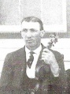

Adolph Heinrich Wilhelm August Meyerhoff was the second child of Carl and Emma (Walter) Meyerhoff, born Tuesday, December 21, 1880, in Percy, IL. He married Emma
Louise Wilhelmine Eggers on May 25, 1911, in Jackson County, IL. Together they had nine children, listed below. After 56 years of marriage, Adolph passed away on
July 11, 1967, in Anna, IL, at the age of 86. Emma followed him in death three years later on January 30, 1970, in Wine Hill, at the age of 79. They were buried in
Saint Paul Lutheran Cemetery in Wine Hill.
Emma Louise Wilhelmine Eggers was the fourth of seven children of Heinrich A. Eggers (1849-1922) and Sophie Margaretha (Lehnhoff) Eggers (1859-1927), born Thursday, May 22, 1890,
in Randolph County. She passed away from an illness of several months in 1970.
Adolph Meyerhoff Emma (Eggers) Meyerhoff
Raymond Henry Meyerhoff (1912-2004)
Raymond was the first child of Adolph and Emma, born August 24, 1912, in Percy. He married Lydia S. Stegmann (1920-2015) on February 1, 1942, in Perryville, MO,
and together they had three children: Donald Meyerhoff (1946-2022), Carolyn Meyerhoff (1948-2018), and one living son (born 1950s). Raymond passed away on January 1,
2004, in Sparta, IL, at the age of 91. Lydia followed him in death 11 years later on November 9, 2015, in Coulterville, IL, at the age of 95. They were buried in
Saint Paul Lutheran Cemetery.
Edna Sophie (Meyerhoff) Wettig (1914-2002)
Edna was the second child of Adolph and Emma, born May 15, 1914, in Wine Hill. She married Henry Herman Wettig (1914-1976) on November 24, 1945, in Wine Hill.
Together they had two sons, born in the late 1940s. Henry passed away on May 26, 1976, in Percy, at the age of 61. Edna followed him in death 26 years later on
August 15, 2002, in Chester, at the age of 88. They were buried in Saint Paul Lutheran Cemetery.
Alfred William Meyerhoff (1916-2001)
Alfred was the third child of Adolph and Emma, born May 13, 1916, in Wine Hill. He never married, and passed away on April 21, 2001, in Percy, at the age of 84.
He was buried in Saint Paul Lutheran Cemetery.
Albert August Meyerhoff (1917-2004)
Albert was the fourth child of Adolph and Emma, born December 3, 1917, in Wine Hill. He married Margaret Doretha Biermann (1918-2008) on October 12, 1939, in Perryville, MO.
Together they had five children: two living daughters (born early 1940s), Roger Meyerhoff (1946-2015), Arlene (Meyerhoff) Hougland (1947-2020), and Brenda (Meyerhoff) Beattie
(1953-2007). Albert passed away December 27, 2004, in Belleville, IL, at the age of 87. Margaret followed him in death four years later on December 24, 2008, in Chester, at
the age of 90. They were buried in Paradise Cemetery in Steeleville, IL.
Irene (Meyerhoff) Steffens (1919-2010)
Irene was the fifth child of Adolph and Emma, born November 22, 1919, in Wine Hill. She married Harold Henry Steffens (1922-1981) on November 14, 1953, in Wine Hill.
Together they had one daughter who died as an infant on February 18, 1943, in Randolph County. Harold passed away on December 15, 1981, in Chester, at the age of 59.
Irene followed him in death 28 years later on January 21, 2010, in Chester, at the age of 90. They were buried in Evergreen Cemetery in Chester.
Infant Son Meyerhoff (December 25, 1922)
Infant Son was the sixth child of Adolph and Emma, who was born and passed away on Christmas Day 1922. He is the first of two of their children to die young, and
the only one whose burial site I do not have record of. My best guess is that he is buried with his parents in Saint Paul Lutheran Cemetery in Wine Hill.
Esther (Meyerhoff) Beckman (1924-2017)
Esther was the seventh child of Adolph and Emma, born May 16, 1924, in Wine Hill. She married Roy Edward Beckman (1926-2010) on May 5, 1951, in Wine Hill. Together
they had three daughters, born in the 1950s. Roy passed away on May 31, 2010, in Waterloo, IL, at the age of 84. Esther followed him in death seven years later on
February 12, 2017, in Columbia, IL, at the age of 92. They were buried in Immanuel Lutheran Cemetery in Jackson County, IL.
Ruby Meyerhoff (1927-1931)
Ruby was the eighth child of Adolph and Emma, born November 25, 1927, in Steeleville. She lived to the short age of three, losing her battle with influenza on
March 15, 1931, in Wine Hill. She was buried in Saint Paul Lutheran Cemetery.
Verna (Meyerhoff) Golding (1931-1992)
Verna was the ninth and final child of Adolph and Emma, born June 29, 1931, in Wine Hill. She married William Edward Golding (1929-2008) on March 21, 1959, in
Los Angeles suburb of Lakewood, California. Together they had three children, born in the late 1960s and early 1970s. Verna passed away on May 15, 1992, in Chester,
at the age of 60. William followed her in death 16 years later on March 19, 2008, in Chester, at the age of 78. They were buried in Saint John's Evangelical Lutheran
Cemetery in Bremen, IL.
 Emma (Eggers) Meyerhoff
Emma (Eggers) Meyerhoff